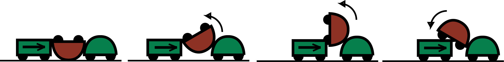
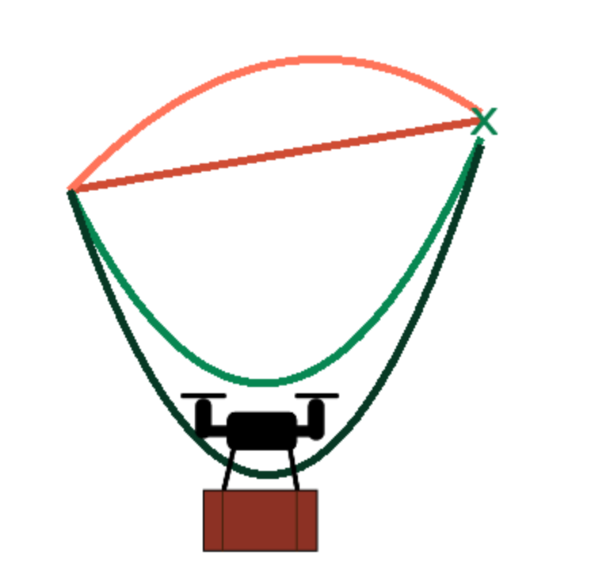
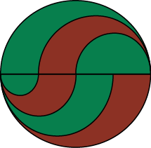
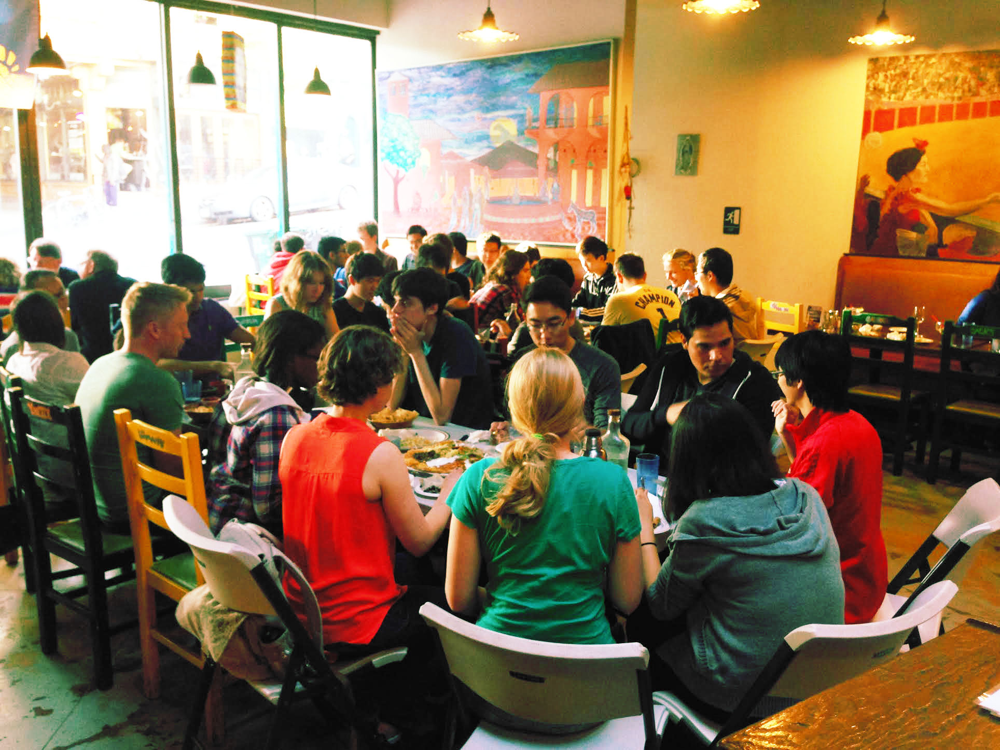

My name is David McPherson and I am a PhD student in EECS at UC Berkeley.
I engineer human-robot and robot-robot collaborations by building interdisciplinary researcher-researcher collaborations touching on minimalistic mechanics, cognitive science, optimal control, and stochastic process theory.
In the process I analyze robot collaboration across the full stack, from the physical layer of cooperative maneuvers to the communication layer to the planning layer.
I outline this adventure across disciplines and throughout collaboration through my four projects below.
Robot-Robot Collaboration

In this project I challenge researchers to reconsider how they design the exterior hulls of the robots they create, as these hulls transform how robots interact with the environment and other robots.
Roboticists have created robot fleets that can move an object by surrounding it and pushing as a team.
These robot teams are restricted to manipulating the object in the plane that they move in.
However, by carefully crafting the teammates' hulls we can actually lift the object out of plane, roll or pitch it up.
The normal forces used in lifting the object arise from the hull shape.
A considerate designer can craft the shape to provide the forces desired for a particular manipulation.
I apply this design approach to a robot maneuvering an incapacitated robot teammate back onto their feet, which allows a co-design of both manipulator and manipulatee hull shapes.

Robot-Human Collaboration
We lose this luxury of co-designing both collaborators when we switch to the context of human-robot collaboration.
Instead we must reverse engineer human collaboration and design our robots to leverage collaboration modes intuitive to humans.
Human behavior can be captured rigorously in the mathematical models inspired by recent advancements in cognitive science.
For example, by modeling human observation as Bayesian inference we can generate actions that ease inference and communicates robot objectives.
My work here extends my collaborator Dr. Anca Dragan's seminal Legibility work to the complete objective function (rather than just endpoints) and from robotic grasping to all forms of automation (such as HVAC systems, TCP, and robot swarm patterns).
Human-Robot Collaboration

However, a human collaborator will do more than just observe, and our robot must predict and work safely around their actions.
I collaborate with Dr. Claire Tomlin to apply optimal control for safety (called "reachability analysis") to models of human behavior and ensuing dynamics.
A pessimistic, over-conservative robot could model a human as adversarial and always prepare for the worst response.
An optimistic, overly-trusting robot could model a human as performing the perfect action without fail.
I propose a more realistic understanding should model a human as ``noisily rational'': performing better actions with higher probability, but still possibly acting sub-optimally due to cognitive resource constraints, misunderstood objectives, or missing information.
This Boltzmann distribution over human action was first proposed by mathematical psychologists Luce and Shepard, and is widely used as the generative model in inverse reinforcement learning and other human-centric statistical methods.
My work investigates how this player choice behavior interacts with the robot's optimal planning, creating a probabilistic differential game.
Human-Human Collaboration

Tackling such a grand span of collaboration problems requires strong interdisciplinary collaborations.
To secure the collaborations that allow my research to thrive, it's necessary for me to serve and grow the robotics community.
I organize weekly social events in conjunction with the CITRIS People and Robots(CPAR) initiative every Tuesday at 5PM.
Graduate students studying AI and robotics are diasporated across departments including Mechanical Engineering, Psychology, and Computer Science.
The goal is to bring these researchers together to build relationships and support each other through the lows and highs of research.
We do this by hosting a friendly meal to bring folks around the same table to share food, friends, and ideas.
Additionally, I further this goal throughout the week by organizing and stocking the graduate student lounge, thereby creating a place for minds to meet and for busy brains to take a healthy break between bursts.
Finally, I am serving the next generation of roboticists by visiting disadvantaged elementary schools and teaching modules on circuits and robotics.
Indeed, I led the charge on fleshing out our hands-on robotics module to a full middle-school level lesson.